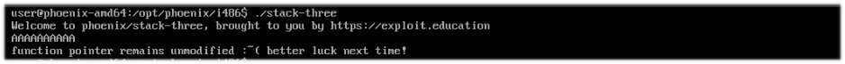
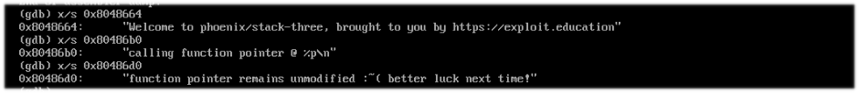

Esta prueba tiene algo diferente, ahora es volatile int(*fp)();.
Otra vez vamos al debugger, y observamos el código.
Volvemos a encontrar algunos puts, sin embargo, no encontramos ningun mensaje de como lograr el objetivo, incluso si seguimos los registros hay jumps que van a (0x080485bf) y (0x080485cf) pero nada más.

Metemos algunos datos para ver que pasa si sobrepasamos el buffer.
Como se puede observar, se ha hecho un overflow (0x00000041).
Bueno, hagamos una prueba, escribamos "BBBB" para ver si recibimos 0x42424242.
Podemos observar como logramos sobreescribir el buffer y return, pero no nos aparece nada sobre como pasar el objetivo, así que hagamosle caso a calling function pointer y busquemos con info function las funciones que utiliza, tambien se puede utilizar objdump, pero ahora no será necesario, con GDB tenemos para esta prueba.
se listaron varias funciones, pero hay una interesante, "complete_level"... vamos a dirigirnos a esa dirección para ver que obtenemos.
Perfecto, ahora veamos que hay en el push que utilizará puts.
Allí se encuentra el mensaje que buscamos, vamos a la práctica para ver el resultado, pero antes anotamos la dirección que nos muestra ya sea info function o el inicio de la funcion ebp, y es (0x08048535).
Listo.